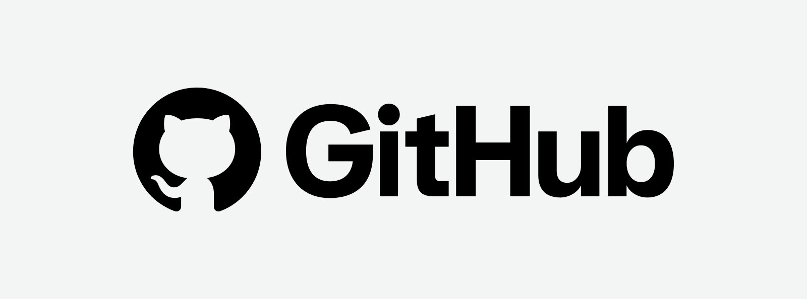

GitHub

You can access the official Sentinel-S3 GitHub repository below:
An educational and free honeypot simulation.
Made by Bradley Sanchez & Alonzo Izzo

You can access the official Sentinel-S3 GitHub repository below:

Sentinel-S3 is an educational and modular honeypot simulation designed to monitor, log, and analyze unauthorized login attempts within a controlled cloud environment.
The goal of Sentinel-S3 is to simulate real-world attack behavior while logging authentication attempts through AWS services such as CloudWatch, CloudTrail, and Amazon S3. This allows administrators to observe attack patterns, collect forensic data, and better understand cloud security monitoring.

This portal is restricted to authorized administrators of the Sentinel-S3 honeypot project. All access is monitored and logged.
| Timestamp | Source IP | Username | Password | Commands |
|---|---|---|---|---|
| Loading… | ||||